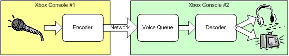

By John Harding, Software Design Engineer, Xbox Advanced Technology Group
"Can you hear me now? Good!"
The ability to talk to other players online has become a fundamental component of the Xbox Live™ experience. With only a few Technical Certification Requirements (TCRs) around Voice and Voice Chat, title developers are left with a lot of decisions to make around their voice chat implementation. The following is a set of "best practice" recommendations based on experience gained over the first year of Xbox Live. It is intended to assist developers in implementing a quality voice chat system for their titles.
This section lists general recommendations related to implementing voice chat in your Xbox title.
Payload/Voice payload – One 20-ms segment of voice data (usually compressed).
Packet/Network packet – A collection of data sent over the network as one unit, usually containing game data and several voice payloads.
Pulse Code Modulation (PCM) – The data format used for storing uncompressed audio data.
Jitter buffer – A delay buffer used to hide variations in network latency.
Whether you're using the Xbox High-Level Voice library (XHV) or a custom voice chat engine, it's important to have a basic understanding of how voice chat works on Xbox. A brief overview is presented here; see the References section for more in-depth resources.

This diagram shows the basic flow of data through a voice chat system. Data flows through the system in the form of discrete payloads, 20 ms in length. The player's microphone captures a payload of raw PCM audio data, which is encoded and compressed before being transmitted over the network. Upon receipt, the payload is placed into a voice queue (sometimes called a "jitter buffer"), that puts payloads into the proper order and schedules them for playback at the appropriate time. Finally, payloads are decoded, mixed with other voice data, and played back either over the player's headset or through the TV speakers
First released in approved form in the April 2003 XDK, XHV greatly simplifies the process of adding voice chat functionality to your title (see the SimpleVoice sample in the XDK). Although the low-level voice chat components are still available for building a custom voice chat engine (see the LowLevelVoiceChat sample in the XDK), XHV is the recommended voice solution for most titles.
Features of XHV:
Now that customers will be able to play games on Xbox Live without having purchased a headset, the TCRs have been updated to include a new requirement that titles support playing voice through the speakers. Since the TCRs are just intended to ensure a baseline level of functionality, they do not specifically address what should happen in more complex multiplayer scenarios. If multiple players on a console have selected voice through speakers, and have conflicting lists of who they should be able to hear, the recommendation is for the title to play the union of all expected voices over the speakers.
Consider the following scenario: Adam, Betty, and Chris are playing on console #1, while Diane, Eugene, and Fred are playing on console #2. The game is set up so players talk only to other players on their team. Adam, Chris, Eugene, and Fred are on team A, and Betty and Diane are on team B. Adam has muted Fred, but Chris has not.
If everyone has a communicator plugged in, the title should behave as it always has. Chris and Eugene can talk to everyone on team A, but Adam and Fred cannot talk to each other because Adam has muted Fred. Betty, Diane, and Fred can talk to and hear each other like normal.
If Adam removes his communicator, he is automatically switched to play voice through speakers. (See the "Voice Without Communicator" TCR.) Since he has muted Fred, only Eugene's voice is played through the speakers. (Chris's voice could be, but it doesn't make sense since he's on the same console.) Note that this means Betty can now overhear some of Team A's conversations.
Now, Chris goes to the UI (See the "Voice Through System Speakers Option" TCR) and selects to have voice intended for him to be played through speakers. With multiple players in "voice through speakers" mode, the title plays the union of everyone that should be heard. So now both Eugene and Fred are played over the speakers, even though Adam has muted Fred.
Betty decides it's unfair that she can hear all of team A's conversations without Adam and Chris hearing team B's conversations, so she turns on voice through speakers. Everyone on team B is now added to the mix, resulting in Diane, Eugene, and Fred all being played over the speakers.
The following week, Adam's account gets voice-banned due to negative player feedback. Not only can he not use his voice communicator now, but neither he, nor anyone else playing on his console, can use the "voice through speakers" option, either.
Although the TCRs only require titles to indicate who is talking while displaying the players list, it's a good idea to indicate this during gameplay, as well. This could be done by some graphical adornment of player characters on screen, overlaying a list of talking players in the Heads-Up Display (HUD), showing a picture of the player in a status area, and so on. The key goal is for players to have a consistent way of quickly identifying who is talking to them.
On the flip side, if it's not obvious to the player who they're currently talking to (for example, everyone, team members, and so on), it's often a good idea to provide a visual indicator of that, as well. This is more of an issue for titles that dynamically change the voice chat group (such as MotoGP) rather than titles with fairly static voice channels.
Gamers have spoken loud and clear—most prefer voice masking to be off by default. In fact, as of the June 2003 Xbox Guide, titles are no longer required to support voice masking at all! If you do choose to support voice masking, be sure to play-test all voice mask settings thoroughly to ensure that players can still be understood clearly. In addition, titles should persist player's voice mask preference so they don't have to set it every time they load the title.
While using a "push to talk" model may make some aspects of voice chat easier to manage, it is often confusing for players, especially since the majority of Xbox Live games use a voice activation model. It also tends to increase voice latency (due to the need to verify that a player can acquire the voice channel) and make conversations less responsive (since players often hesitate before responding, to ensure no one else is trying to talk at the same time). Starting with the August 2003 XDK release, XHV even allows titles to replace XHV's built-in voice activation algorithm with their own custom algorithm.
If you do decide to use a "push to talk" model, it's a good idea to indicate which player, if any, currently has control of the voice channel, so that players can tell if they will be heard or not. Another approach is to provide audio or visual feedback if a player fails to acquire the voice channel. It's also important to ensure that all players get fair use of the voice channel, so that one player cannot indefinitely block other players from talking. Finally, be careful with the muting TCRs. Seeing that a player has control of the voice channel, but not hearing them talk is a good indicator that you've been muted by that other player.
A common complaint from gamers is that they can't talk while the game is loading. Fortunately, this is an easy problem to solve. All that's required is for the title to keep pumping the voice engine and handle sending and receiving voice payloads over the network. This does require using asynchronous file I/O routines in order to be able to pump the voice engine once per frame, but using asynchronous I/O is always a good idea. (See the Maximizing Xbox File Performance white paper.) As a last resort, if you can not use asynchronous I/O, it's possible to spin off a worker thread to service the voice engine and network traffic during loading screens.
If your title does not return to a lobby area after the session has ended, it's a good idea to allow players to talk after the game has completed, whether it's to gloat or set up a rematch.
Finally, if there are times where voice chat is not supported or allowed, titles should indicate this to the player via an on-screen indicator or audible notification through the headset.
One of the biggest challenges associated with voice chat is fitting the amount of bandwidth that it requires into your overall bandwidth budget. This section describes how to calculate and optimize your bandwidth usage.
To plan your bandwidth budget around voice traffic, you need to be able to calculate the amount of bandwidth that will be used for voice traffic. Voice bandwidth usage is determined by several factors:
Number of players: The Xbox voice chat codec compresses each raw voice stream down to 3.2 Kbps, but adds a 2-byte header to each compressed payload, resulting in 10 bytes for each 20-ms voice payload for a total of 4 Kbps per compressed voice stream.
Voice engine used: When three or four players are playing on the same console, XHV uses the round-robin encoder to limit the total outgoing voice traffic for the console to 8 Kbps. Because the round-robin encoder requires synchronizing multiple microphones, most custom voice chat engines don't use it, consuming 12 Kbps and 16 Kbps for three and four players, respectively.
| # of players | Maximum Voice Bandwidth | |
|---|---|---|
| Low-Level Voice | XHV | |
| 1 | 4.0 Kbps | 4.0 Kbps |
| 2 | 8.0 Kbps | 8.0 Kbps |
| 3 | 12.0 Kbps | 8.0 Kbps |
| 4 | 16.0 Kbps | 8.0 Kbps |
Frequency of network packets: Because the overhead for Xbox secure packets is larger than the packet overhead of a typical UDP packet, the number of packets sent per second has a significant impact on total bandwidth consumption. See the following table for a comparison of bandwidth loss due to overhead for typical packet rates. To minimize packet overhead, you should send voice data and game data in the same packet whenever possible.
| Packet Overhead | |||
| Bytes/sec | Kbps | Percent of 64 Kbps | |
| VDP Packet Header | 44 | 0.352 | |
| Packet Frequency | |||
| 3 Hz | 132 | 1.056 | 1.7% |
| 6 Hz | 264 | 2.112 | 3.3% |
| 10 Hz | 440 | 3.520 | 5.5% |
| 15 Hz | 660 | 5.280 | 8.3% |
| 20 Hz | 880 | 7.040 | 11.0% |
| 30 Hz | 1320 | 10.560 | 16.5% |
| 60 Hz | 2640 | 21.120 | 33.0% |
Number of destinations: This is fairly straightforward to calculate. Multiply the results from the previous questions by the number of consoles to which you're sending voice data. If you're sending voice data client-server, you'll need to calculate separately for clients and the server.
Even a well-optimized voice chat engine will still consume a significant amount of bandwidth, so you'll want to plan your bandwidth budget early as you design your network layer. There are a couple of common approaches for designing a bandwidth budget.
The first approach is to calculate a per-player (or per-console) bandwidth cost, and set the maximum number of players based on the available bandwidth. This could be based on either the minimum 64-Kbps connection, or by using the QoS APIs to determine available bandwidth at run time. The following table shows an example:
| Available bandwidth | 64.0 Kbps |
| Game data per player | 3.0 Kbps |
| Voice data per player | 4.0 Kbps |
| Packet rate | 6 Hz |
| Packet overhead | 2.1 Kbps |
| Total bandwidth per destination | 9.1 Kbps |
| Number of destinations | 7 |
| Number of players | 8 |
The second approach is to determine how much bandwidth is required for game data in order to support the desired number of players, and calculate how many streams of voice data can fit in the remainder. The following table shows an example:
| Available bandwidth | 64.0 Kbps |
| Game data per player | 3.0 Kbps |
| Number of players | 10 |
| Number of destinations | 9 |
| Game data total bandwidth | 27.0 Kbps |
| Packet rate | 6 Hz |
| Packet overhead total bandwidth | 19.0 Kbps |
| Game + overhead total bandwidth | 46.0 Kbps |
| Bandwidth available for voice | 18.0 Kbps |
| Voice data per player | 4.0 Kbps |
| Number of voice destinations | 4 |
| Size of voice channel | 5 |
The codec used for voice chat on Xbox compresses voice data down to 3.2 Kbps, and then adds a 2-byte header containing sequencing and synchronization data used by the receiving voice queue. This results in a 10-byte voice payload for every 20 ms of voice data. When combining multiple voice payloads into one network packet, you can delta-compress these headers to save bandwidth.
The header has the following layout:
typedef struct _XVOICE_CODEC_HEADER
{
WORD bMsgNo : 4;
WORD wSeqNo : 12;
}
XVOICE_CODEC_HEADER, *LPXVOICE_CODEC_HEADER;
The message number is used to mark when one sequence of speech has ended and another is begun, and is incremented whenever the player stops speaking for a significant amount of time. The sequence number is the most critical piece of data, and is used by the voice queue to ensure payloads are played back at the correct time, as well as to handle lost and out-of-order payloads. When a player is talking continuously, the message number for each voice payload will be the same, and the sequence number will increment by either one or two for each subsequent payload.
The most straightforward way to take advantage of this behavior is to store the full codec header for the first voice payload in the network packet, and then store a single-byte bitfield that tracks which of the following eight sequence numbers are present in the network packet, and assume that the message number is the same for all voice payloads in the network packet. Note that this assumes you're not trying to send more than 180-ms worth of data in one network packet (a packet rate of 5.5 Hz), but you can always use a larger bitfield if you have a lower packet rate.
While it would be great if every player in the game could talk to every other player in the game, that's not usually an achievable goal due to bandwidth constraints. By limiting the size of groups that are sending and receiving voice data, the bandwidth consumed by voice decreases geometrically. One option is to have the player select between voice channels, either explicitly, or implicitly as part of team formation. Alternately, the game can automatically and/or dynamically assign players to voice channels based on its own criteria. Just make sure it's clear to players who they are talking to.
Some suggestions for grouping players into voice channels:
Often, it's possible to combine several different methods. For example, players may be able to talk to the three players who are physically close to them, as well as whichever player currently has the walkie-talkie power-up.
While XHV goes a long way towards improving the reliability and quality of voice communication, there are a few things that titles should do to ensure they get the best possibly voice quality.
It's important that voice data is sent at fairly regular intervals in order to ensure error-free playback on the receiving side. The receiver uses a jitter buffer to smooth out variations in network latency, but it is designed for small variations (generally not more than 20-ms change over several seconds). If the interval between packets increases significantly (for example, due to a large glitch in frame rate), the payloads will not arrive at their destination before they are scheduled to be played back, and the player's voice will "break up."
If the receiver gets enough consecutive payloads arriving significantly later than expected, it assumes that it has lost synchronization with the sender and resets itself in order to resynchronize with that sender. This causes noticeable distortion of the sending player's voice stream, but can be easily avoided by ensuring you do not send stale voice payloads over the network.
Once you've determined your desired packet frequency, use a timer to send out packets at that interval, rather than timing based off of a frame count or other frame-rate-dependent means. It's still possible that a frame-rate glitch will happen right before you were scheduled to send a network packet, which will cause you to send it out later than planned. To ensure you don't send stale voice payloads if/when this happens, keep track of the difference between when you send each network packet and when it was scheduled to be sent. If it's more than 250 ms late, discard the stale voice payloads before sending. Finally, if you're using XHV, ensure that the dwOutOfSyncThreshold member in XHV_RUNTIME_PARAMS is larger than the number of voice payloads you typically send in one network packet (the default is 10).
The voice engine has a limited amount of space to store completed voice payloads before the title retrieves them (configured by the dwMaxCompressedBuffers member in XHV_RUNTIME_PARAMS). If this storage overflows because the title is not calling DoWork frequently enough, the voice engine will have to discard payloads, which will cause the player's voice to break up when the receiver realizes it is missing those payloads.
Starting with the June 2003 XDK, XHV will print debug warning messages when it receives payloads that are late and/or out-of-sync. It's important to watch for these warnings and track down their cause. Usually, it is due to the sender transmitting stale voice payloads. It will also print debug warnings when the title is not calling DoWork frequently enough, which can be addressed by increasing the dwMaxCompressedBuffers member when initializing XHV.
This section covers topics specifically related to Xbox Live.
It's important to read and understand the TCRs before you start implementing voice chat in your title, because they can affect design decisions. For example, the requirement to support voice playback through speakers may impact if you allow players on the same console to be on different teams. Pay particular attention to the muting TCRs, in order to ensure that players can not tell when they've been muted by another player.
There are certain control messages related to voice chat that need to be sent during a game session, primarily communicator status and mute control. To guarantee that these messages reach their destinations, even with significant packet loss, they must be sent over a reliable network channel, such as TCP or a reliable UDP/VDP scheme. Fortunately, these control messages do not need to be sent frequently, so the extra overhead of sending them over a reliable channel is not significant.
You can find the latest version of the Xbox Guide here on Xbox Central.
See the companion spreadsheet for live, editable versions of the tables in this document.